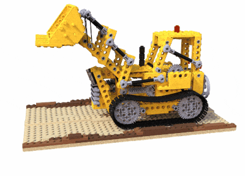
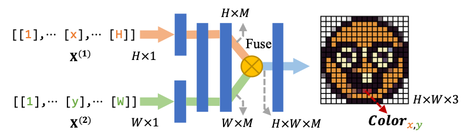
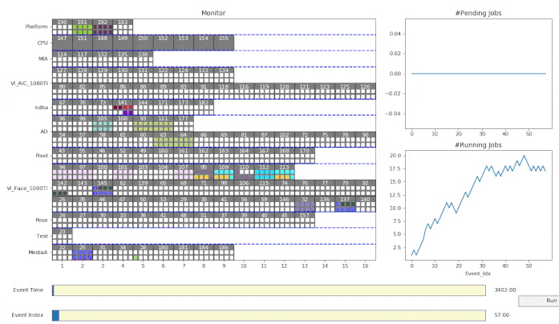
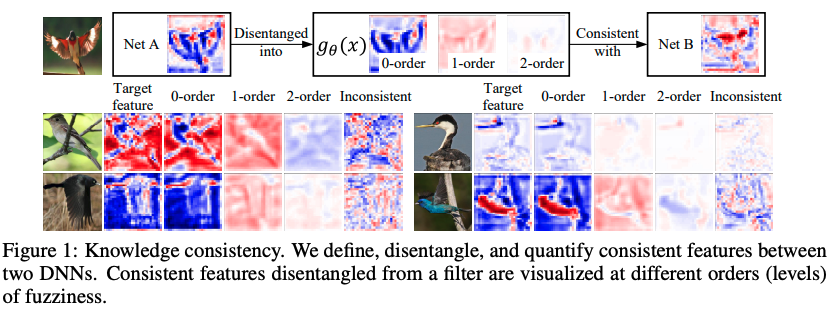

|
|
Ruofan Liang (若凡, RF)
Ph.D. Student University of Toronto |

About
|
I am a 3rd-year PhD student at the University of Toronto, supervised by Prof. Nandita Vijaykumar.
Concurrently, I am also affiliated with the Vector Institute.
|
News
- NEW [Dec, 2022] Passed PhD Qualifying Oral Exam🎉. Special thanks for the suggestions and feedbacks from Prof. David Lindell and Prof. Alec Jacobson
Research
 |
SPIDR: SDF-based Neural Point Fields for Illumination and Deformation |
 |
CoordX: Accelerating Implicit Neural Representation with a Split MLP Architecture |
 |
A Simulation Platform for Multi-tenant Machine Learning Services on Thousands of GPUs |
 |
Knowledge Consistency between Neural Networks and Beyond |
Selected Awards
- Vector Institute Research Grant, 2022.
- 1st Prize of Huawei ICT innovation competition, Global final
- Xingdong Scholarship, SJTU, 2019.
- Huawei Scholarship, 2018.
Miscellaneous
|
I am a geek always excited to discover something Fun.
Now, I am still on my long long way to obtaining knowledge & experience,
hoping to exploit my potential.
X
Put on a happy face🙃~ |
Last updated: Dec, 2022